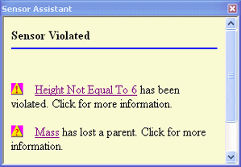

Responding to sensor alarms
Identify a sensor alarm
-
In the upper-right corner of the graphics window, click the sensor alarm notification symbol.
-
If this symbol is displayed
 , one or more sensor violations have occurred.
, one or more sensor violations have occurred. -
If this symbol is displayed
 , one or more elements, variables, or dimensions tracked by the sensor may have been
deleted.
, one or more elements, variables, or dimensions tracked by the sensor may have been
deleted.
-
-
In the Sensor Assistant, scroll until the specific warning or violation is visible, and then click the sensor name hyperlink.
Example:
The Sensors pane is displayed and the sensor associated with the violation or warning is identified by a thin red border.
Tip:You can repair the sensor, turn it off, delete it, or edit it using commands on the sensor shortcut menu.
Repair a sensor
-
On the Sensors pane, do any of the following:
-
(Edit the criteria used to define the sensor) Double-click the sensor or right-click and choose Edit. In the Sensor Parameter dialog box, edit the inputs used to define the sensor.
-
(Turn off an active sensor) Right-click the sensor and choose Disable.
-
(Turn on a sensor) Right-click the sensor and choose Enable.
-
(Update manual sensors) If the Update Sensor option in the Sensor Parameters dialog box is set to Manual, then you can right-click the sensor and choose Update to update the sensor manually.
-
(Cut/Copy/Paste/Delete) Right click the sensor and choose the appropriate command to quickly create, modify, and remove sensors.
-
How do I
Create a custom sensorCreate a minimum distance sensor
Create a sheet metal sensor
Create a surface area sensor
Create a variable sensor
Learn more
SensorsLook up more details
Sensor AssistantMinimum Distance Sensor Parameters dialog box
Sensors tab
Sheet Metal Sensor command bar
Sheet Metal Sensor Parameters dialog box
Surface Area Sensor command bar
Surface Area Sensor dialog box
Variable Sensor Parameters dialog box
Custom Sensor Parameters dialog box
Custom Sensor DLL Dialog Box